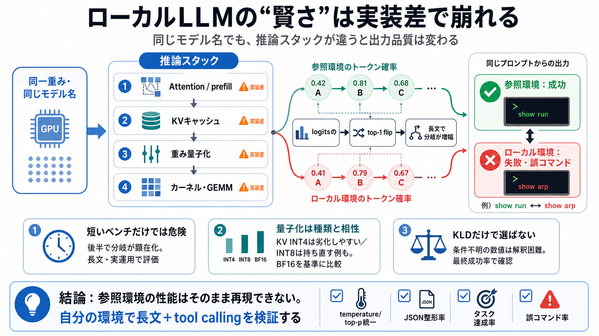

Compressed reading deck
COVER
02 / 13
賢さの正体
実装差
ローカルLLMで「同じモデル名なのに賢くない」と感じる主因は、モデルではなく推論スタックの実装差（attention/KVキャッシュ/量子化/カーネル）にある。
鍵
logits→次トークン選択が微妙にズレ、長文で分岐が増幅される
結論
参照環境の性能はそのまま再現できないことが多い
PROBLEM
03 / 13
“モデルが違う？”
同じでも
同じ“モデル名（同一重み）”でも、GPU/ドライバ/命令セット、vLLM（vLLMの推論エンジン）やattentionバックエンドの違いで挙動が変わる。
どこが変わる
prefillのattention実装
どこが変わる
KVキャッシュ量子化
どこが変わる
重み量子化方式
METAPHOR
04 / 13
小さな差
分岐
attention/KV/量子化で確率分布（logits→確率）がわずかに変わり、top-1 flip（最大確率トークンの入れ替わり）が起きる。
事象
top-1 flip（最大が別トークンに）
増幅
以降の文脈が別経路になり、長文ほど差が目に見えて拡大
Bilingual: logits（対数確率）
/ logits（対数確率）
ARCHITECTURE
05 / 13
推論スタック
侵入点
品質低下はモデル内より、推論の“周辺”で起きやすい。特に、prefill attention・KVキャッシュ・重み量子化・カーネル/GEMM手法の差が効く。
attention
FlashAttention 2 / Flash Inference / Triton Attention など
KVキャッシュ
BF16 → INT8/INT4で長文に弱さが出やすい
重み
FP8/INT8/NVFP4/AWQ-INT4…方式と実装相性が支配的
EVIDENCE
06 / 13
注意：短いベンチ
油断
実行の早い段階では一致しても、プロンプト後半で分岐が顕在化し得るため、短いゼロショットだけで品質を判断すると誤る。
起き方
prefillは揃っても、後半でtop-1 flipが出て経路が変わる
意味
“長文・実運用”の差が最終品質に直結しやすい
DISTINCTION
07 / 13
量子化の差
耐性
KVキャッシュ量子化は長文で品質低下を招きやすい。さらに“INT4は回復しない一方、INT8は持ち直す”など、種類で頑健性が異なる。
KV INT4
分岐が致命化しやすく、回復しないケース
KV INT8
比較的“持ち直す”ケースがある
基準
BF16のKVキャッシュが基準になりやすい
ENUMERATION
08 / 13
ツール呼び出し
致命
tool calling（エージェント的タスク）は、top-1 flipの影響を強く受ける。誤分岐が最終的な誤コマンドに繋がり得る。
分岐の結果
構文の解釈ミス → 実行対象を取り違える
“show run” ↔ “show arp”
評価の落とし穴
“top-1 flip”だけでなく、その後の最終成功率（コマンド成功）が別問題
Bilingual: tool calling（ツール呼び出し）
/ tool calling（ツール呼び出し）
COMPARISON
09 / 13
順位は固定じゃない
相性
重み量子化方式は一概に優劣が決まらない。実験では特定のW8A16が最良、NVFP4が最悪など、方式と実装条件の相性が反転を生む。
例：W8A16
（この条件では）最も良好
例：NVFP4
（この条件では）最も悪い
教訓
方式比較は“参照実装の条件”依存
PROCESS
10 / 13
KLDの扱い
解釈不能
KLD（KLダイバージェンス）の“数値が小さい”は、比較条件・測定手順が不明なら解釈不能。ログit保存点、文脈長、方向性、語彙切り捨て、集計方法が鍵になる。
見落とし例
参照チェックポイント、キャリブレーション、文脈長、サンプリング位置が違う
実務の結論
“KLDだけ”で選ばず、実運用の成功判定で確かめる
Bilingual: KLD（KLダイバージェンス）
/ KLD（KL divergence）
CLOSING
11 / 13
やること
検証設計
自分の環境の弱点は、長文・ツール呼び出し込みの評価で確かめる。サンプラー設定（temperature/top-p等）も参照に合わせ、フォーマット遵守と最終成功率で判定する。
評価対象
長文ベンチ + tool calling
統一条件
同一サンプラー設定（temperature/top-p等）
成功判定
JSON整形率・最終タスク達成率・誤コマンド率
REFERENCES
12 / 13
参考の方向性
読む
下記は、本文で触れた論点（attention/KVキャッシュ/量子化/KLD）を深掘りするための典型的な参照先カテゴリである。
vLLM / inference engine（推論エンジン）
prefill・KVキャッシュ・サンプリングの実装差が結果に効くことを確認する。
FlashAttention 2 / Triton Attention（attentionバックエンド）
attention計算の差が長文で分岐（top-1 flip）を生む可能性を追う。
Quantization（量子化）：KV cache / weight（FP8/INT8/INT4など）
BF16→INT8/INT4の挙動差、方式ごとの頑健性、カーネル相性を調べる。
KL divergence（KLD）評価設計
ログit保存点・方向性・文脈長・集計方法の開示がないKLDは解釈できない、という注意点の裏取り。
注：このデッキはユーザー提示文の要約のみを目的としており、特定リンクの一次資料を断定して列挙していない。
REFERENCES
13 / 13
References
No references found